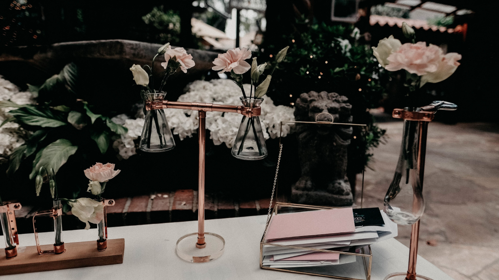

Furniture
A maker at heart, I get inspired by everyday objects and can see their potential to serve a different purpose. I meticulously cut, shaped, polished, and hand-assembled the floral vessels below. These are designed to highlight the beauty of a single bloom or two by elevating the flower head to be at your eye-level.
